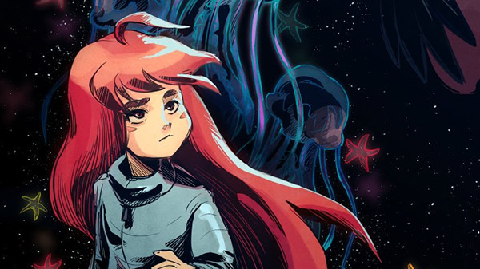

1º Lugar
SPIDER-MAN

"Marvel's Spider-Man" é uma jornada épica que mergulha os jogadores no mundo de um dos heróis mais amados da Marvel. Com uma narrativa emocionante, jogabilidade empolgante e um mundo aberto de tirar o fôlego, este jogo cativa tanto os fãs de longa data quanto os recém-chegados ao universo do Homem-Aranha. É uma experiência que deixa uma marca duradoura e solidifica o status do Homem-Aranha como um dos maiores super-heróis dos quadrinhos e dos jogos.
2º Lugar
GOD OF WAR RAGNAROK

"God of War: Ragnarok" foi um dos jogos mais aguardados da nova geração de consoles,
promete ter uma experiência épica na mitologia nórdica. Com sua combinação de ação intensa,
narrativa emocionante e personagens carismáticos, a série "God of War" continua a cativar os
jogadores e
a elevar o patamar dos jogos de ação e aventura. Prepare-se para embarcar em uma jornada
inesquecível,
onde os deuses caminham entre mortais e o fim do mundo está à espreita. O Ragnarok está chegando, e
Kratos estará pronto para enfrentá-lo.
3º Lugar
THE LAST OF US PART II

"The Last of Us Part II" é um jogo que transcende as barreiras da mídia dos videogames, oferecendo uma experiência profunda e emocional que desafia as convenções narrativas e morais. Com sua narrativa envolvente, personagens complexos e jogabilidade aprimorada, este jogo é uma obra-prima que fica na memória muito tempo após o término. É uma exploração corajosa da natureza humana em um mundo pós-apocalíptico e uma experiência que merece ser apreciada por jogadores e entusiastas de histórias igualmente.
4º Lugar
FORZA HORIZON 5

O Forza Horizon 5 jogo apresenta uma variedade de modos de jogo, incluindo um modo carreira, um modo multiplayer e um modo livre. No modo carreira, os jogadores podem competir em uma série de eventos para ganhar dinheiro e carros. No modo multiplayer, os jogadores podem competir uns contra os outros online. No modo livre, os jogadores podem explorar o mundo do jogo livremente.
5º Lugar
NARUTO STORM 04

"Naruto Shippuden: Ultimate Ninja Storm 4" é um título que conquistou o coração dos fãs de Naruto e amantes de jogos de luta. Ele é uma homenagem digna à série e oferece uma experiência completa que combina ação, narrativa envolvente e gráficos deslumbrantes. Seja para reviver as aventuras de Naruto ou para mergulhar pela primeira vez no mundo ninja, este jogo é uma escolha excelente para os fãs de Naruto e jogadores em geral.
6º Lugar
CELESTE
"Celeste" é mais do que apenas um jogo; é uma experiência emocional e reflexiva que aborda temas profundos por meio de sua narrativa envolvente, jogabilidade desafiadora e trilha sonora cativante. Este título independente é um testemunho do poder dos jogos para contar histórias significativas e proporcionar experiências memoráveis. Se você busca uma experiência de jogo que vá além da diversão superficial e que desafie tanto suas habilidades quanto sua mente, "Celeste" é uma escolha excepcional.
7º Lugar
SUPER SMASH BROS

Super Smash Bros. é um tributo à diversidade e à riqueza do mundo dos videogames. Com sua jogabilidade acessível, elenco variado de personagens e o poder de unir gerações, é mais do que um jogo de luta; é uma celebração da paixão e da criatividade que impulsionam a indústria de videogames. Super Smash Bros. continuará a ser uma parte essencial da cultura gamer por muitos anos, conectando jogadores e personagens icônicos em batalhas épicas.
8º Lugar
RED DEAD REDEPTION 2

Red Dead Redemption 2 é uma experiência única e inesquecível no mundo dos videogames. Com uma narrativa profunda, um mundo aberto expansivo e uma atenção aos detalhes que desafia o convencional, o jogo cativa os jogadores e os transporta para um momento crucial na história dos Estados Unidos. Se você procura uma aventura envolvente que combine narrativa e jogabilidade de alta qualidade, Red Dead Redemption 2 é uma escolha imperdível. Jogue e prepare-se para uma jornada emocionante pelo Oeste selvagem como nunca antes.
9º Lugar
BATMAN ARKHAN KNIGHT
"Batman: Arkham Knight" é um jogo que combina habilmente ação, narrativa e exploração, proporcionando uma experiência envolvente para os fãs do Batman e para os amantes de videogames em geral. Com sua trama intrigante, jogabilidade viciante e ambientação excepcional, este título é um marco na história dos jogos de super-heróis e uma homenagem digna ao Cavaleiro das Trevas.
10º Lugar
GTA V